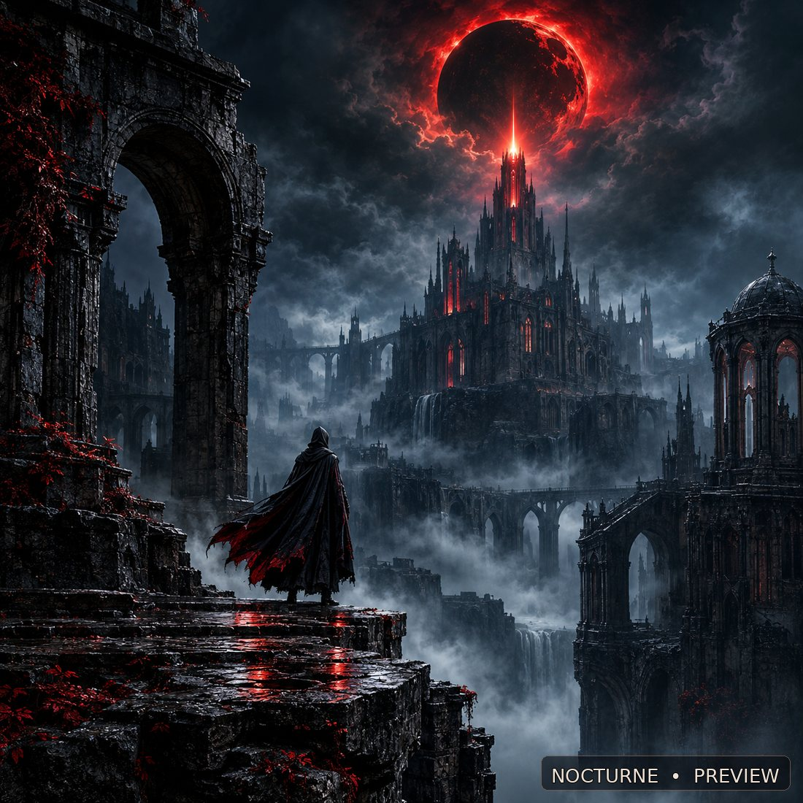

01 / 05
The Last Signal
At the edge of a forgotten city, a lone wanderer watches the final beacon burn beneath a blood-red moon. The work explores isolation, memory, and the fragile trace of hope left in a silent world.
Lost city · The Wanderer · Crimson / charcoal / slate
View preview ↗